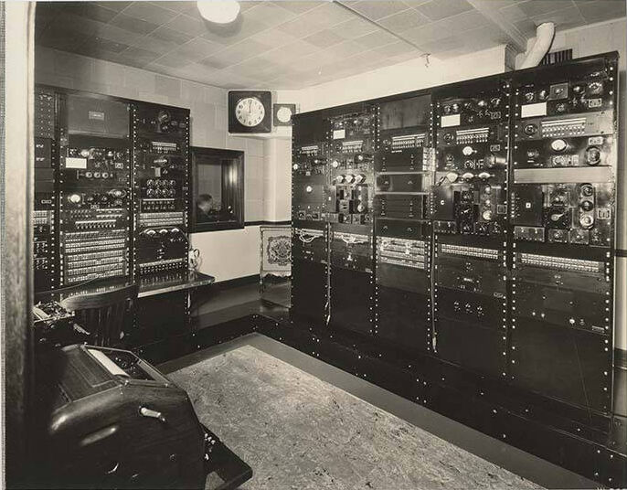

The APR 70 Troupe Presents No. 1
01L.A.
02Dolce
03Vita
A radio drama for seven voices and a clock. When we cut, the clock will tell you where you stand. Listen for it.
Program No. 1 plays here
An entertainment company · Film · Television · Theater · Radio · Books
Long Island City, New York.
Seven actors around real microphones. Index cards on a wall in Long Island City. We make pictures for audiences who've been waiting: crime and documentary built out of the five boroughs, elevated genre for global television, auteur features that trade formula for conviction.
SIGNAL
The APR 70 Troupe Presents No. 1
A radio drama for seven voices and a clock. When we cut, the clock will tell you where you stand. Listen for it.
Program No. 1 plays here

Everything you want. Everything you don't want.
East Coast. New York first. Every format the city touches.
New York · East Coast CH 02 · DOOR 02
Los Angeles, and every market a signal reaches.
West Coast and global television.
Los Angeles · Global CH 03 · DOOR 03
Feature films, by mandate.
Auteur-driven, morally clear, built for permanence rather than a release window.
Feature FilmsA window lit at two in the morning in Long Island City. Somebody is still reading.
APR 70 Pictures is a film and television production company. Three divisions, one parent company, one standard. The work earns its position or it doesn't get made.
The audience first, always. Not our slate... their evening.